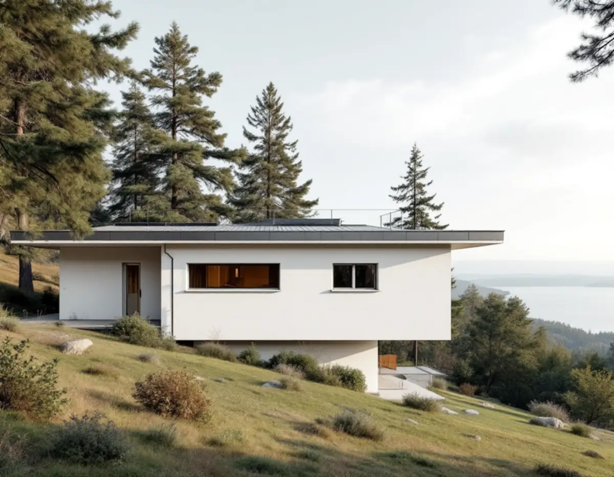
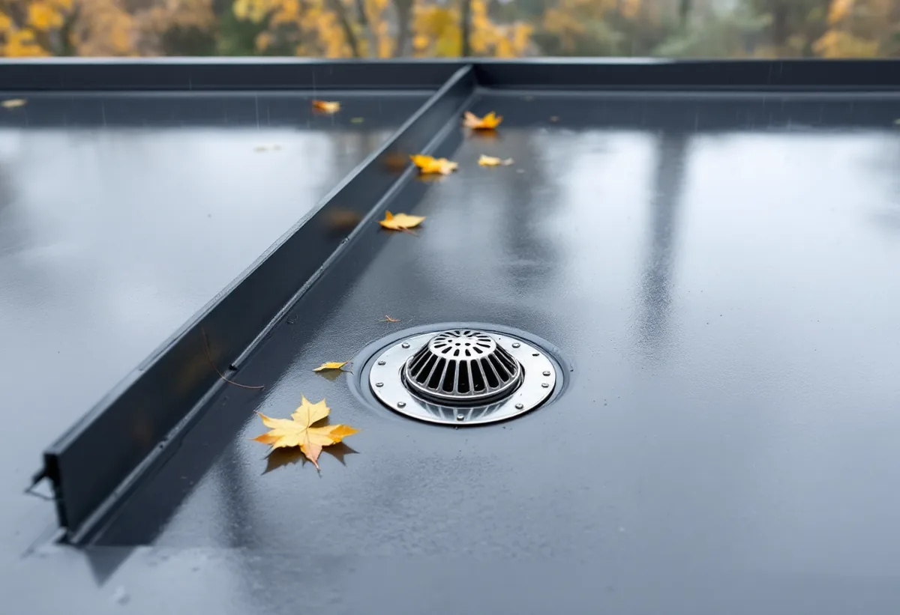

Följ vattnet
Vi ser var taket lutar, var vatten står kvar och hur brunnar, rännor och bräddavlopp fungerar.
Vid Mälarstranden i Mälarhöjden står vita funkishus från 1930-talet bredvid utsirade trävillor från 1800-talet, och på Hägerstensåsen byggdes villor mellan 1939 och 1948. Har huset ett låglutande tak är det avvattningen som avgör om taket håller tätt. Geal Entreprenad AB har egna plåtslagare som byter plåt, rännor och takavvattning på villor i Hägersten, med gratis platsbesök och skriftligt kostnadsförslag.

Stadsmuseets Stockholms Spår om Mälarhöjden beskriver promenadvägen längs den kuperade Mälarstranden mellan Klubbensborg och Lyran, med stora utsirade trävillor från 1800-talets andra hälft, strama vita funkishus från 1930-talet vid Pettersbergsvägen och senare tiders kataloghus. Tornvillan på Klubbensborg byggdes 1869. Från 1913, när Fridhems villastad fick spårvagnsförbindelse med staden, blev det populärt att bosätta sig här, området planlades 1923 och fick namnet Mälarhöjden 1926. Kyrkan invigdes 1929.
Hägerstensåsen var enligt Stockholms Spår en skogsklädd bergsrygg före 1938. På stadens mark i söder byggdes trevånings smalhus, medan det på den norra delen även uppfördes punkthus och villor. De första husen blev färdiga 1939 och de sista 1948. Stadens vägledning Varsam utveckling av småhus- och villaområden räknar Mälarhöjden till villastäderna, där husen är individuellt utformade och kommer från olika tidsepoker.
För plåtslagaren betyder blandningen att varje tak behöver bedömas för sig. Ett brant tak leder bort vattnet snabbt, medan vattnet på ett tak med låg lutning står kvar om avvattningen inte fungerar. Det är de låglutande taken, på villor och på tillbyggnader, som den här sidan handlar om.

Boverket skriver att låglutande tak belastas mer av nederbördsvatten och att en otillräcklig eller felaktig avvattning kan orsaka fuktskador. Takavvattningen kan vara utvändig, med hängrännor och stuprör, eller invändig, med brunnar i taket och stuprör inne i huset. Den utvändiga varianten kan enligt Boverket ge problem med att det fryser i rännor eller stuprör, och stuprör som går ner till marken kan skadas av till exempel fordon. Även renssilen och anslutningen mot dagvattnet kan skadas eller lossna.
På ett tak med invändig avvattning sitter brunnarna ofta i ränndalarna. Boverket påpekar att renssilarna kan sättas igen av löv och mossa, så att vatten blir stående och kan frysa och skada tätskiktet, och att det stående vattnet kan stiga så högt att det rinner in via lågt belägna trösklar mot en terrass. Taket måste därför ha ett bräddavlopp som leder bort vattnet om brunnarna sätter igen, och bräddavloppet ska ligga lägre än trösklar och krön.
De invändiga stuprören kyls av regnvattnet och kan enligt Boverket ge både kondens och läckage om de skadas. Hinner dagvattenledningarna utanför huset inte leda bort vattnet kan stuprören i värsta fall fyllas och orsaka stora läckage. Boverket nämner också att en påbyggnad eller ombyggnad kan öka vattenbelastningen jämfört med vad avvattningen var gjord för.
På ett låglutande tak är det plåtdetaljerna i kanterna som håller ihop taket: avtäckningen på takkanten eller en låg mur runt taket, fotplåten mot rännan och anslutningen mot brunnar och genomföringar. Läggs ett låglutande tak med falsad plåt gör vi skarvarna med dubbelfals, eftersom vattnet rör sig långsammare och snön ligger kvar längre.
Vid ett platsbesök på ett sådant tak börjar vi med att följa vattnet: var taket lutar, var det står kvar efter regn, om brunnarna har renssil och om det finns ett bräddavlopp. Sedan tittar vi på plåten i kanterna och kring genomföringarna, och på insidan efter fuktfläckar i innertaket. Vill du lägga ett tak med växtlighet skriver Stockholm Vatten och Avfall att vegetationsklädda tak kan minska avrinningen med 25 till 75 procent och att taken bör vara platta eller ha en låg lutning, 0–5 grader. Ett sådant tak behöver bedömas för sig, bland annat när det gäller bärighet och tätskikt.
Läs mer om plåttakens uppbyggnad på sidan falsat plåttak och om rännor och stuprör under hängrännor och stuprör.
Stockholm Vatten och Avfall skriver att takvatten från stuprör inte bör ledas till avloppsledningen, att marken ska luta från huset så att vattnet kan rinna bort och att hängrännor, stuprör och brunnar ska rensas från löv, is och snö. Servisledningarna inom fastighetens gräns är fastighetsägarens ansvar, och innan läget eller dimensionerna på en servisledning ändras ska du kontakta Stockholm Vatten och Avfall.
När en invändig avvattning byts mot utvändiga rännor, eller tvärtom, ändras var vattnet når marken. På de kuperade tomterna i Mälarhöjden ner mot Mälaren är det viktigt att vattnet inte leds mot grunden eller mot grannen nedanför. Vi planerar rännornas och stuprörens läge tillsammans med dig, och ledningar i mark och anslutningar till servisen samordnas med den som ansvarar för dem. Allmänt om plåtarbeten finns på sidan plåtslagare.
Vi ser var taket lutar, var vatten står kvar och hur brunnar, rännor och bräddavlopp fungerar.
Innertak och väggar kring invändiga stuprör kontrolleras efter fukt.
Plåt, avvattning och eventuella nya stuprör redovisas som egna poster.
Kantavtäckningar, fotplåt och anslutningar mot brunnar görs om med täta skarvar.
Vi går igenom avvattningen tillsammans och visar hur renssilarna hålls rena.
Skatteverket räknar reparation, rengöring och byte av plåttak, hängrännor och stuprör på ett småhus som rotarbete, liksom montering och nedmontering av byggnadsställningar i samband med arbetet.
Avdraget är 30 procent av arbetskostnaden, högst 50 000 kronor per person och år och högst 75 000 kronor tillsammans med rutavdrag. Material och resor ger inget avdrag. Vi drar avdraget direkt på fakturan.
Takets storlek och lutning, om avvattningen är invändig eller utvändig, hur många brunnar och genomföringar taket har, skicket på tätskikt och plåt i kanterna och vilken ställning som behövs på en kuperad tomt. Efter ett gratis platsbesök får du ett skriftligt kostnadsförslag.
Plåttak, hängrännor och beslag.
Plåtslagare i Stockholm →Takbyte, takbesiktning och plåtarbeten.
Takläggare i Hägersten →Kuperad tomt, stödmur och dränering.
Byggföretag i Hägersten →Trävillor, färglager och skonsam färgborttagning.
Fasadmålning i Hägersten →Småstugor, typritningar och panel.
Fasadrenovering i Hägersten →Golv i källare och suterrängvåning.
Golvläggare i Hägersten →Efterkrigstidens lägenheter och asbestprov.
Köksrenovering i Hägersten →Lägenheter, villor vid Mälaren och radhus.
Målare i Hägersten →Verandor, dörrar och snickeridetaljer på villan.
Snickare i Hägersten →